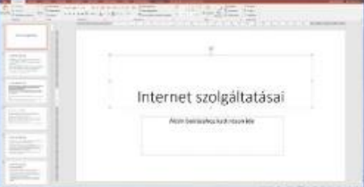

Adatbázisrendszerek
HTML 5 alapjai
Prezentáció készítés

HTML 5 nyelv
Ez a kzóurzus a html 5 alapjait tartalmazza.
Tartalom
HTML története, szerkezete
Szövegformázás
Háttérszín, kép
Képek kezelése
Linkek készítése
Lista létrehozása
Táblázat készítése
Kész weblap készítése